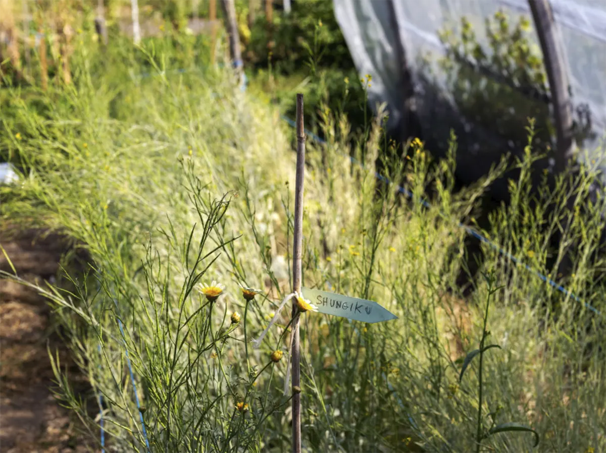

Semences de pays développe une production de semences reproductibles, rustiques et adaptées à une agriculture biologique proche des cycles de la nature, en collaboration avec les initiatives nourricières de proximité. 
Chez Mamie: Rue des Rois 17 1204 Genève Le Topinambour: Avenue William-Fraisse 9 1006 Lausanne Ferme du Joran: Chemin des Philosophes 15 1350 Orbe Le Grainier : Route des Mines de Sel 1880 Bex Nouvelle Terre : Rue du Grand-Verger 12 1920 Martigny